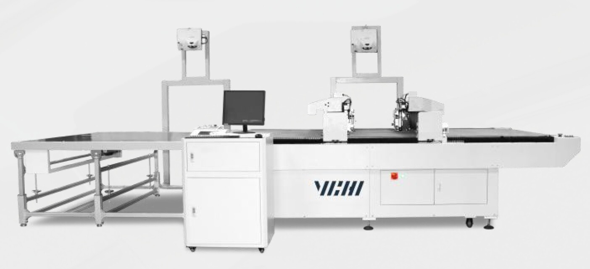
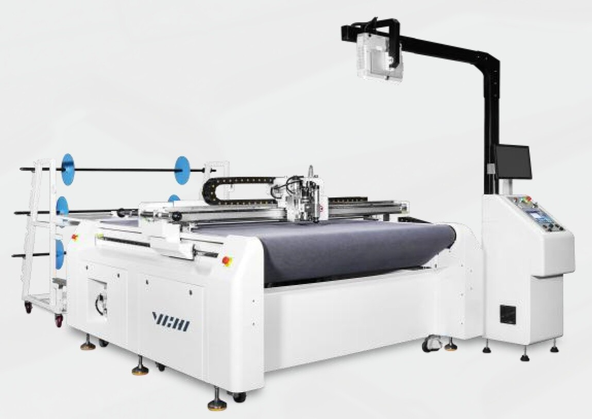
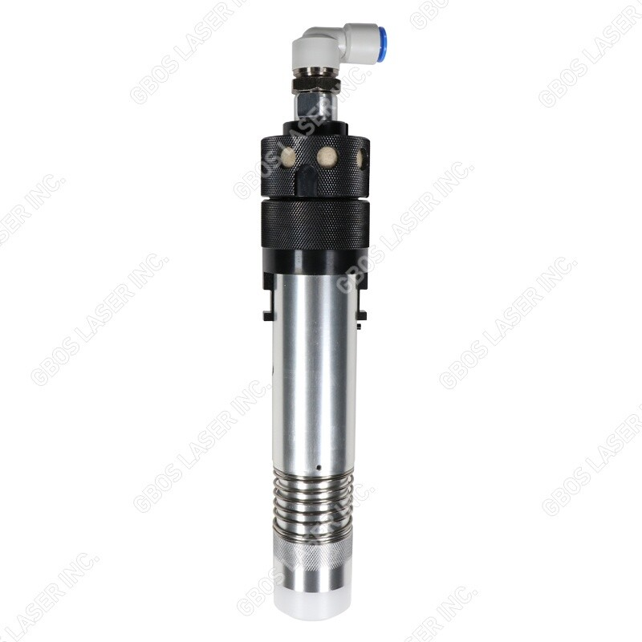
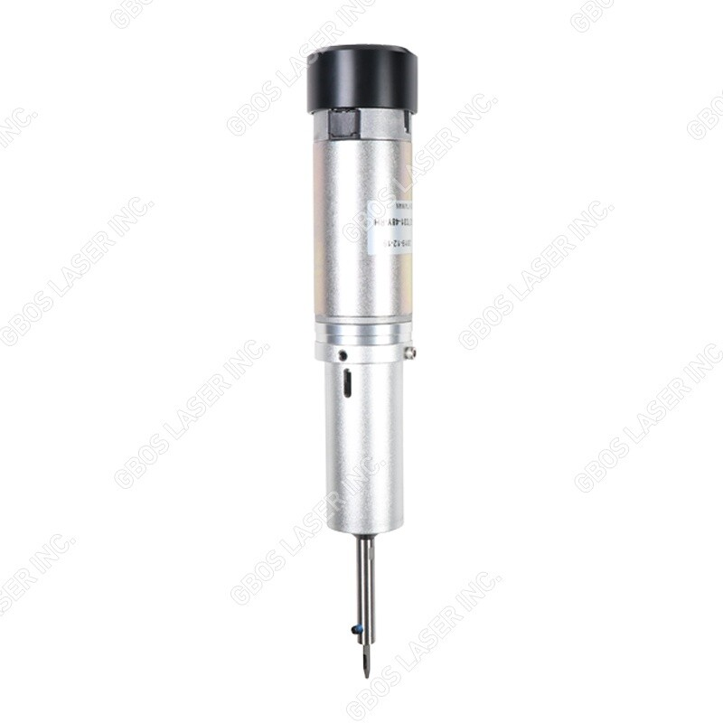
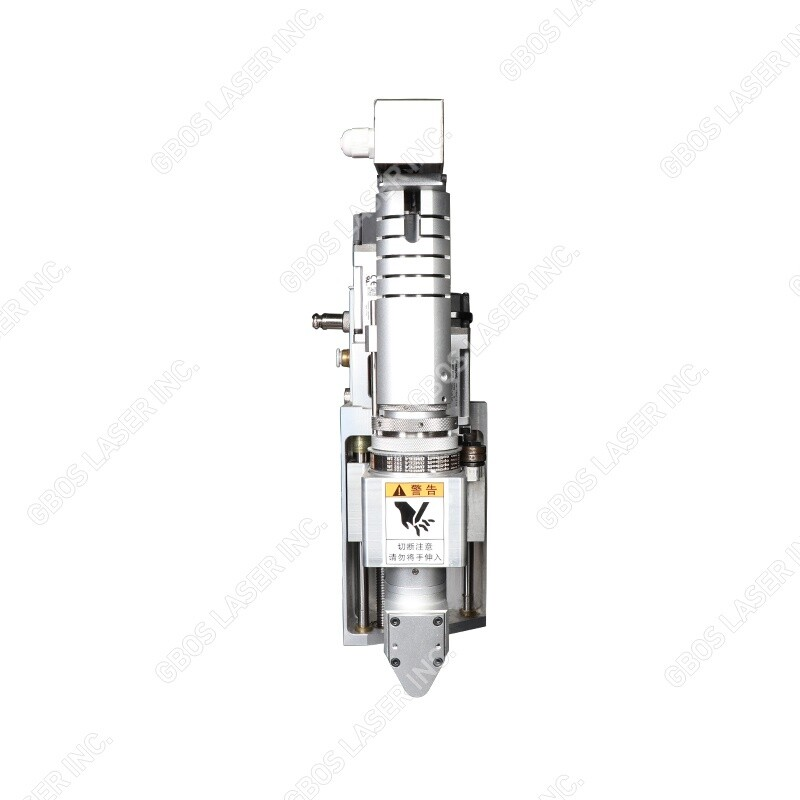
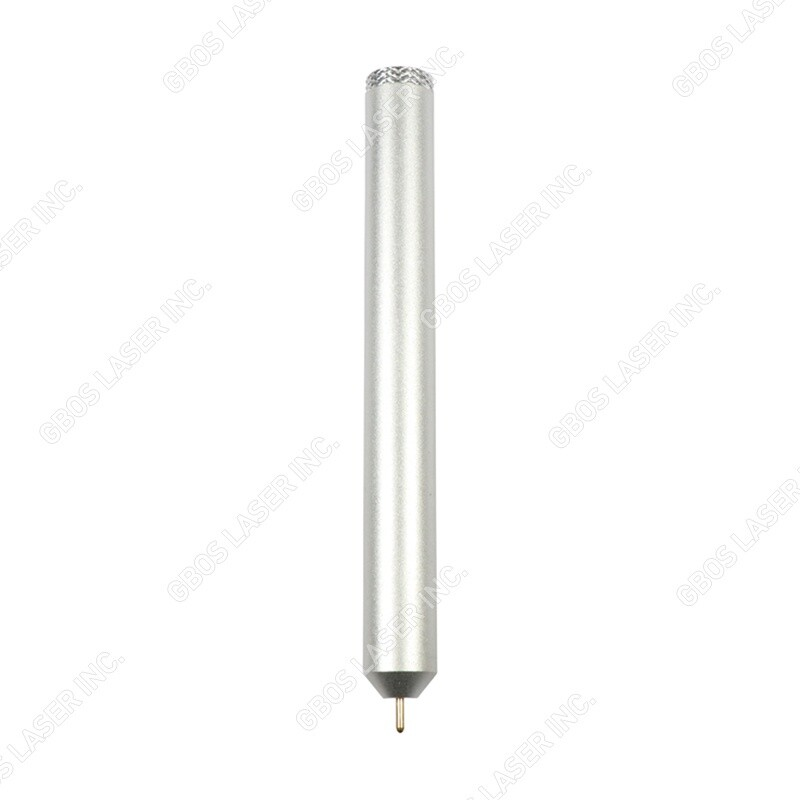
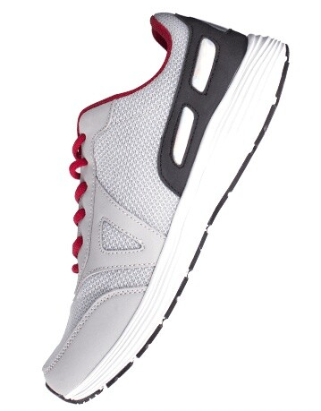
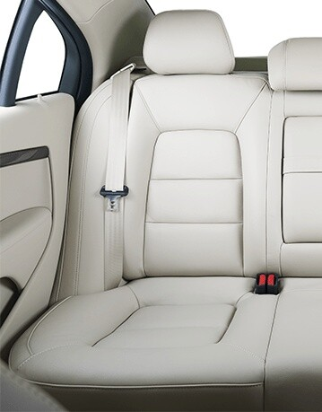

Customer's SupportV. SURESH +91-9444959053
Working TimeMON–SAT: 10:00AM–06:00PM

+Model: KC – 1625 TT
Suitable for garment, car seat, sofa and leather cutting and large-format cutting. Dual-head can work separately, higher efficiency and saving more materials.
| MODEL | KC – 1625 TT |
|---|---|
| Processing Area (mm) | 1600 x 2000 mm |
| Max cutting speed | 1000 MM/S |
| Gross Power | 3500 W |
| Weight | 1000 KG |
| Acceleration | 20 M/S |
| Measurement (L×W×H) | 3600 x 2400 x 1450 MM |
| System / Compatible Format | Windows 7/8/10, AI, PLT, DXF, DST, DSB |
| Power Supply | 380VAC, 32.6A/50Hz |
| Environmental Requirements | Temperature 10-30°C, Humidity no condensation 30-80% |
Model: KC – 1625
Suitable for garment, car seat, sofa and leather cutting and large-format cutting. Single-head, higher efficiency and saving more materials.
| MODEL | KC – 1625 |
|---|---|
| Processing Area (mm) | 1600 x 2000 mm |
| Max cutting speed | 1000 MM/S |
| Gross Power | 3500 W |
| Weight | 1000 KG |
| Acceleration | 20 M/S |
| Measurement (L×W×H) | 3600 x 2400 x 1450 MM |
| System / Compatible Format | Windows 7/8/10, AI, PLT, DXF, DST, DSB |
| Power Supply | 380VAC, 32.6A/50Hz |
| Environmental Requirements | Temperature 10-30°C, Humidity no condensation 30-80% |

+Model: KC-1612-P
Faster digital cutting system for small order and irregular production.
| MODEL | KC-1612-P |
|---|---|
| Processing Area (mm) | 1600 x 1200 mm |
| Max cutting speed | 1000 MM/S |
| Gross Power | 2300 W |
| Weight | 580 KG |
| Acceleration | 20 M/S |
| Measurement (L×W×H) | 2180 x 2380 x 1250 MM |
| System / Compatible Format | Windows 7/8/10, AI, PLT, DXF, DST, DSB |
| Power Supply | 380VAC, 40A/50-60Hz / 220VAC, 50Hz, 20A |
| Environmental Requirements | Temperature 10-30°C, Humidity no condensation 30-80% |
Suitable for various shoe uppers cutting, Perfect dual head async motion control systems, greatly improve processing speed and quality.

It is powerful, can meet the requirement of cutting thick materials.

The holes quality is good.

Smokeless, tasteless, environmental friendly.

It is more accurate than the traditional crafts, and more efficient.

+
+